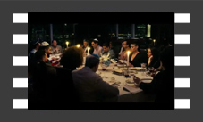
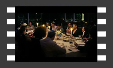
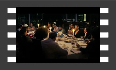
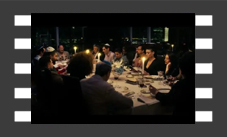
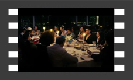

《疯狂的石头》架构简单，讲的是围绕一块玉石、两伙觊觎它的盗贼和一个保安科长的故事。但简单的架构下，隐藏着很多盘根错节的线索，层层缠绕。
《一出好戏》这部电影讲述的是一个普通人中了六千万元的彩票。但他却和一行人在乘坐冲浪鸭时意外流落到一座无人小岛上，虽然岛上环境恶劣，但他始终没有放弃，最终获救。
电影《无名之辈》所展现出来的“平凡”才是真正的平凡，因为连影片中每个角色的梦想都普通得不能再普通了。
 


